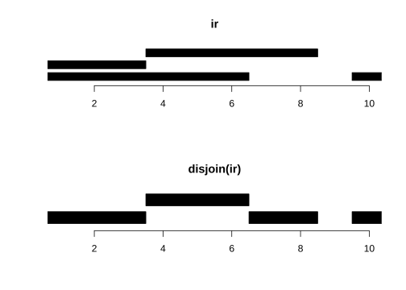
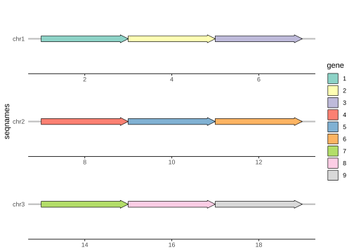

2 生物数据结构
https://bioconductor.org/packages/release/workflows/html/sequencing.html

2.1 S4 类
2.1.1 DataFrame
2.1.2 Rle
Run-Length Encoding (RLE) 是一种简单且常用的数据压缩方法，特别适用于存储和处理重复数据序列。class?Rle
在 RLE 中，连续的重复元素（称为“运行”）被压缩成一个值和一个计数对。这个值表示重复的元素，计数表示它们的数量。例如，序列 [AAAAABBBCCDAA] 可以被编码为 (A5, B3, C2, D1, A2)。
2.2 Biostrings
Biological strings
DNAstringSet、RNAStringSet、AAStringSet、BStringSet
2.2.1 DNA
Code
# BiocManager::install("Biostrings")
library(Biostrings) %>% suppressMessages()
Biostrings::DNA_ALPHABET
#> [1] "A" "C" "G" "T" "M" "R" "W" "S" "Y" "K" "V" "H" "D" "B" "N" "-" "+" "."
IUPAC_CODE_MAP
#> A C G T M R W S Y K V
#> "A" "C" "G" "T" "AC" "AG" "AT" "CG" "CT" "GT" "ACG"
#> H D B N
#> "ACT" "AGT" "CGT" "ACGT"
d <- DNAStringSet(c("TGCACGTGCATT","ACTGCA"))
d
#> DNAStringSet object of length 2:
#> width seq
#> [1] 12 TGCACGTGCATT
#> [2] 6 ACTGCA
length(d)
#> [1] 2
width(d)
#> [1] 12 6
rev(d)
#> DNAStringSet object of length 2:
#> width seq
#> [1] 6 ACTGCA
#> [2] 12 TGCACGTGCATT
reverse(d)
#> DNAStringSet object of length 2:
#> width seq
#> [1] 12 TTACGTGCACGT
#> [2] 6 ACGTCA
reverseComplement(d)
#> DNAStringSet object of length 2:
#> width seq
#> [1] 12 AATGCACGTGCA
#> [2] 6 TGCAGT
translate(d)
#> AAStringSet object of length 2:
#> width seq
#> [1] 4 CTCI
#> [2] 2 TA
alphabetFrequency(d)
#> A C G T M R W S Y K V H D B N - + .
#> [1,] 2 3 3 4 0 0 0 0 0 0 0 0 0 0 0 0 0 0
#> [2,] 2 2 1 1 0 0 0 0 0 0 0 0 0 0 0 0 0 0
letterFrequency(d,letters = "GC")
#> G|C
#> [1,] 6
#> [2,] 3
dinucleotideFrequency(d)
#> AA AC AG AT CA CC CG CT GA GC GG GT TA TC TG TT
#> [1,] 0 1 0 1 2 0 1 0 0 2 0 1 0 0 2 1
#> [2,] 0 1 0 0 1 0 0 1 0 1 0 0 0 0 1 0
# 共识矩阵
consensusMatrix(d)
#> [,1] [,2] [,3] [,4] [,5] [,6] [,7] [,8] [,9] [,10] [,11] [,12]
#> A 1 0 0 1 0 1 0 0 0 1 0 0
#> C 0 1 1 0 2 0 0 0 1 0 0 0
#> G 0 1 0 1 0 1 0 1 0 0 0 0
#> T 1 0 1 0 0 0 1 0 0 0 1 1
#> M 0 0 0 0 0 0 0 0 0 0 0 0
#> R 0 0 0 0 0 0 0 0 0 0 0 0
#> W 0 0 0 0 0 0 0 0 0 0 0 0
#> S 0 0 0 0 0 0 0 0 0 0 0 0
#> Y 0 0 0 0 0 0 0 0 0 0 0 0
#> K 0 0 0 0 0 0 0 0 0 0 0 0
#> V 0 0 0 0 0 0 0 0 0 0 0 0
#> H 0 0 0 0 0 0 0 0 0 0 0 0
#> D 0 0 0 0 0 0 0 0 0 0 0 0
#> B 0 0 0 0 0 0 0 0 0 0 0 0
#> N 0 0 0 0 0 0 0 0 0 0 0 0
#> - 0 0 0 0 0 0 0 0 0 0 0 0
#> + 0 0 0 0 0 0 0 0 0 0 0 0
#> . 0 0 0 0 0 0 0 0 0 0 0 0从 Ensembl 的FASTA文件’Homo_sapiens.GRCh38.cdna.all.fa’中下载所有智人cDNA序列
Code
library(AnnotationHub) %>% suppressMessages()
ah <- AnnotationHub(cache = "D:/AnnotationHub")
ah
ah2 <- query(ah, c("fasta", "homo sapiens", "Ensembl", "cdna"))
ah2
# 下载为TwoBitFile文件
dna <- ah2[["AH68262"]]
dna@resource
#> [1]"C:\\Users\\WANGAN~1\\AppData\\Local\\Temp\\RtmpeUSnD9/BiocFileCache/40e014f2123b_75008"
Biostrings::getSeq(dna)Code
library(rtracklayer)
dna <- import.2bit(con = "C:\\Users\\WANGAN~1\\AppData\\Local\\Temp\\RtmpeUSnD9/BiocFileCache/40e014f2123b_75008")
dna
#> DNAStringSet object of length 187626:
#> width seq names
#> [1] 12 GGGACAGGGGGC ENST00000632684.1
#> [2] 9 CCTTCCTAC ENST00000434970.2
#> [3] 13 ACTGGGGGATACG ENST00000448914.1
#> [4] 8 GAAATAGT ENST00000415118.1
#> [5] 12 GGGACAGGGGGC ENST00000631435.1
#> ... ... ...
#> [187622] 1370 GGCTGAGTCTGGGCCCCAGG...AAGATGCAGCCGGGAGGTGA ENST00000639790.1
#> [187623] 284 GGCGTCTACAAGAGACCTTC...GCCCTAGATGACCACTGTTA ENST00000639660.1
#> [187624] 105 TGCATCACTCTGGCATTGAC...GTGGACCCCAGAAAGTTAAT ENST00000643577.1
#> [187625] 900 ATGGGATGTCACCAATCAAT...GGAAGGAGAGGCTGATGTAA ENST00000646356.1
#> [187626] 930 ATGGGAGTCAACCAATCATG...TGCAGAGGACGCTGTCTATG ENST00000645792.12.2.2 RNA
Code
Biostrings::GENETIC_CODE
#> TTT TTC TTA TTG TCT TCC TCA TCG TAT TAC TAA TAG TGT TGC TGA TGG CTT CTC CTA CTG
#> "F" "F" "L" "L" "S" "S" "S" "S" "Y" "Y" "*" "*" "C" "C" "*" "W" "L" "L" "L" "L"
#> CCT CCC CCA CCG CAT CAC CAA CAG CGT CGC CGA CGG ATT ATC ATA ATG ACT ACC ACA ACG
#> "P" "P" "P" "P" "H" "H" "Q" "Q" "R" "R" "R" "R" "I" "I" "I" "M" "T" "T" "T" "T"
#> AAT AAC AAA AAG AGT AGC AGA AGG GTT GTC GTA GTG GCT GCC GCA GCG GAT GAC GAA GAG
#> "N" "N" "K" "K" "S" "S" "R" "R" "V" "V" "V" "V" "A" "A" "A" "A" "D" "D" "E" "E"
#> GGT GGC GGA GGG
#> "G" "G" "G" "G"
#> attr(,"alt_init_codons")
#> [1] "TTG" "CTG"
Biostrings::RNA_GENETIC_CODE
#> UUU UUC UUA UUG UCU UCC UCA UCG UAU UAC UAA UAG UGU UGC UGA UGG CUU CUC CUA CUG
#> "F" "F" "L" "L" "S" "S" "S" "S" "Y" "Y" "*" "*" "C" "C" "*" "W" "L" "L" "L" "L"
#> CCU CCC CCA CCG CAU CAC CAA CAG CGU CGC CGA CGG AUU AUC AUA AUG ACU ACC ACA ACG
#> "P" "P" "P" "P" "H" "H" "Q" "Q" "R" "R" "R" "R" "I" "I" "I" "M" "T" "T" "T" "T"
#> AAU AAC AAA AAG AGU AGC AGA AGG GUU GUC GUA GUG GCU GCC GCA GCG GAU GAC GAA GAG
#> "N" "N" "K" "K" "S" "S" "R" "R" "V" "V" "V" "V" "A" "A" "A" "A" "D" "D" "E" "E"
#> GGU GGC GGA GGG
#> "G" "G" "G" "G"
#> attr(,"alt_init_codons")
#> [1] "UUG" "CUG"
RNA_ALPHABET
#> [1] "A" "C" "G" "U" "M" "R" "W" "S" "Y" "K" "V" "H" "D" "B" "N" "-" "+" "."
r <- RNAStringSet(c("AUCG", "GCAU", "AUCGAU", "GCUA"))
r
#> RNAStringSet object of length 4:
#> width seq
#> [1] 4 AUCG
#> [2] 4 GCAU
#> [3] 6 AUCGAU
#> [4] 4 GCUA2.2.3 蛋白质
组成人体蛋白质的21种氨基酸，20 + 硒代半胱氨酸（UGA-终止密码子）
Code
Biostrings::AMINO_ACID_CODE
#> A R N D C Q E G H I L K M
#> "Ala" "Arg" "Asn" "Asp" "Cys" "Gln" "Glu" "Gly" "His" "Ile" "Leu" "Lys" "Met"
#> F P S T W Y V U O B J Z X
#> "Phe" "Pro" "Ser" "Thr" "Trp" "Tyr" "Val" "Sec" "Pyl" "Asx" "Xle" "Glx" "Xaa"
AA_ALPHABET
#> [1] "A" "R" "N" "D" "C" "Q" "E" "G" "H" "I" "L" "K" "M" "F" "P" "S" "T" "W" "Y"
#> [20] "V" "U" "O" "B" "J" "Z" "X" "*" "-" "+" "."
protein_strings <- AAStringSet(c("MATH", "GCAU", "MATHMATH", "CUMA"))
protein_strings
#> AAStringSet object of length 4:
#> width seq
#> [1] 4 MATH
#> [2] 4 GCAU
#> [3] 8 MATHMATH
#> [4] 4 CUMA
# 二进制字符串存储 如seq_id、quality
binary_strings <- BStringSet(c("ERCC010101", "CRCC110011", "101010", "111000"))
binary_strings
#> BStringSet object of length 4:
#> width seq
#> [1] 10 ERCC010101
#> [2] 10 CRCC110011
#> [3] 6 101010
#> [4] 6 1110002.3 Ranges
2.3.1 IntervalRanges
IRanges
Code
library(IRanges)
set.seed(10)
ranges <- IRanges::IRanges(
start = round(runif(10, 1, 100)),
width = round(runif(10, 0, 50)),
names = paste0("exton_", letters[sample(1:26, 10)])
)
ranges
#> IRanges object with 10 ranges and 0 metadata columns:
#> start end width
#> <integer> <integer> <integer>
#> exton_h 51 83 33
#> exton_n 31 58 28
#> exton_g 43 48 6
#> exton_f 70 99 30
#> exton_x 9 26 18
#> exton_r 23 43 21
#> exton_u 28 30 3
#> exton_m 28 40 13
#> exton_e 62 81 20
#> exton_a 44 85 42
start(ranges)
#> [1] 51 31 43 70 9 23 28 28 62 44
width(ranges)
#> [1] 33 28 6 30 18 21 3 13 20 42
end(ranges)
#> [1] 83 58 48 99 26 43 30 40 81 85没有维度，但有长度
重叠检测: 检查不同区间是否有重叠。
Code
合并区间: 将重叠或相邻的区间合并为一个更大的区间。
Code
plotRanges <- function(x, xlim = x ,
main =deparse(substitute(x)),
col = "black", sep = 0.5, ...){
height = 1
if(is(xlim, class2 = "Ranges"))
xlim = c(min(start(xlim)), max(end(xlim)))
bins <- disjointBins(IRanges(start(x),end(x)+1))
plot.new()
plot.window(xlim, c(0, max(bins)*(height + sep)))
ybottom <- bins * (sep + height) - height
rect(start(x)-0.5, ybottom, end(x)+0.5, ybottom + height,
col = col, ...)
title(main)
axis(1)
}Code
ir <- IRanges::IRanges(
start =c(1, 1, 4, 10),
end = c(6, 3, 8, 10)
)
ir
#> IRanges object with 4 ranges and 0 metadata columns:
#> start end width
#> <integer> <integer> <integer>
#> [1] 1 6 6
#> [2] 1 3 3
#> [3] 4 8 5
#> [4] 10 10 1
disjoin(ir)
#> IRanges object with 4 ranges and 0 metadata columns:
#> start end width
#> <integer> <integer> <integer>
#> [1] 1 3 3
#> [2] 4 6 3
#> [3] 7 8 2
#> [4] 10 10 1
disjointBins(IRanges(start(ir), end(ir) + 1)) # 1,2,3,1 放于第1，2，3，1层
#> [1] 1 2 3 1
disjointBins(IRanges(start(disjoin(ir)), end(disjoin(ir)) + 1)) #放于第1，2，1，1层
#> [1] 1 2 1 1
par(mfrow = c(2,1))
plotRanges(ir)
plotRanges(disjoin(ir))
2.3.2 GenomicRanges
GRanges：用于表示基因组（染色体）范围的数据结构，例如Promoters，Genes，SNPs，CpG Islands，……
Code
library(GenomicRanges)
# help("GRanges-class")
set.seed(10)
Granges <- GRanges(
seqnames = Rle( values = c('chr1', 'chr2', 'chr3'), lengths = c(3, 3, 3)),
ranges = IRanges(start = seq(1,18,2), width = 3),
strand = rep(c("+","-","*"),each=3),
score = 101:109,
GC = runif(9)
)
Granges
#> GRanges object with 9 ranges and 2 metadata columns:
#> seqnames ranges strand | score GC
#> <Rle> <IRanges> <Rle> | <integer> <numeric>
#> [1] chr1 1-3 + | 101 0.507478
#> [2] chr1 3-5 + | 102 0.306769
#> [3] chr1 5-7 + | 103 0.426908
#> [4] chr2 7-9 - | 104 0.693102
#> [5] chr2 9-11 - | 105 0.085136
#> [6] chr2 11-13 - | 106 0.225437
#> [7] chr3 13-15 * | 107 0.274531
#> [8] chr3 15-17 * | 108 0.272305
#> [9] chr3 17-19 * | 109 0.615829
#> -------
#> seqinfo: 3 sequences from an unspecified genome; no seqlengthsCode
sort(Granges)
#> GRanges object with 9 ranges and 2 metadata columns:
#> seqnames ranges strand | score GC
#> <Rle> <IRanges> <Rle> | <integer> <numeric>
#> [1] chr1 1-3 + | 101 0.507478
#> [2] chr1 3-5 + | 102 0.306769
#> [3] chr1 5-7 + | 103 0.426908
#> [4] chr2 7-9 - | 104 0.693102
#> [5] chr2 9-11 - | 105 0.085136
#> [6] chr2 11-13 - | 106 0.225437
#> [7] chr3 13-15 * | 107 0.274531
#> [8] chr3 15-17 * | 108 0.272305
#> [9] chr3 17-19 * | 109 0.615829
#> -------
#> seqinfo: 3 sequences from an unspecified genome; no seqlengths
values(Granges) <- DataFrame(score = rnorm(9), GC = runif(9))
Granges
#> GRanges object with 9 ranges and 2 metadata columns:
#> seqnames ranges strand | score GC
#> <Rle> <IRanges> <Rle> | <numeric> <numeric>
#> [1] chr1 1-3 + | -0.177211 0.2395891
#> [2] chr1 3-5 + | 0.170618 0.7707715
#> [3] chr1 5-7 + | 0.242814 0.3558977
#> [4] chr2 7-9 - | -0.179406 0.5355970
#> [5] chr2 9-11 - | -0.630519 0.0930881
#> [6] chr2 11-13 - | 0.978693 0.1698030
#> [7] chr3 13-15 * | 0.293297 0.8998325
#> [8] chr3 15-17 * | -0.370329 0.4226376
#> [9] chr3 17-19 * | 0.543615 0.7477465
#> -------
#> seqinfo: 3 sequences from an unspecified genome; no seqlengthsflank(x, width, start = TRUE, both = FALSE) 用于在基因组范围对象 (GRanges) 上扩展或调整范围。它会基于输入的基因组范围返回其上游或下游的邻近区域。flanking sequence
-
x: 一个 GRanges 对象。 -
width: 你想要的上下游区域的宽度（如上例中的 5）。 -
start: 这个参数决定了是否使用起始端（TRUE）还是结束端（FALSE）来生成上下游区域。如果你的基因组是正链，start = TRUE 表示上游。如果是负链，start = TRUE 则表示下游。默认为 TRUE。 -
both: 如果设置为 TRUE，则会在范围的两端生成 width 宽度的区域。
Code
flank(Granges,5)
#> GRanges object with 9 ranges and 2 metadata columns:
#> seqnames ranges strand | score GC
#> <Rle> <IRanges> <Rle> | <numeric> <numeric>
#> [1] chr1 -4-0 + | -0.177211 0.2395891
#> [2] chr1 -2-2 + | 0.170618 0.7707715
#> [3] chr1 0-4 + | 0.242814 0.3558977
#> [4] chr2 10-14 - | -0.179406 0.5355970
#> [5] chr2 12-16 - | -0.630519 0.0930881
#> [6] chr2 14-18 - | 0.978693 0.1698030
#> [7] chr3 8-12 * | 0.293297 0.8998325
#> [8] chr3 10-14 * | -0.370329 0.4226376
#> [9] chr3 12-16 * | 0.543615 0.7477465
#> -------
#> seqinfo: 3 sequences from an unspecified genome; no seqlengthspromoters(x, upstream = 2000, downstream = 200) 通常用于提取基因的启动子区域（promoter regions）。在基因组分析中，启动子区域是靠近基因起始位点的区域，通常被认为是调控基因表达的关键区域。启动子区域是基于基因组范围的起始位置提取的，上游（upstream）和下游（downstream）的长度可以自定义。
Code
promoters(Granges)
#> GRanges object with 9 ranges and 2 metadata columns:
#> seqnames ranges strand | score GC
#> <Rle> <IRanges> <Rle> | <numeric> <numeric>
#> [1] chr1 -1999-200 + | -0.177211 0.2395891
#> [2] chr1 -1997-202 + | 0.170618 0.7707715
#> [3] chr1 -1995-204 + | 0.242814 0.3558977
#> [4] chr2 -190-2009 - | -0.179406 0.5355970
#> [5] chr2 -188-2011 - | -0.630519 0.0930881
#> [6] chr2 -186-2013 - | 0.978693 0.1698030
#> [7] chr3 -1987-212 * | 0.293297 0.8998325
#> [8] chr3 -1985-214 * | -0.370329 0.4226376
#> [9] chr3 -1983-216 * | 0.543615 0.7477465
#> -------
#> seqinfo: 3 sequences from an unspecified genome; no seqlengthsCode
library(GenomeInfoDb)
genome(Granges) <- "hg19"
seqinfo(Granges)
#> Seqinfo object with 3 sequences from hg19 genome; no seqlengths:
#> seqnames seqlengths isCircular genome
#> chr1 NA NA hg19
#> chr2 NA NA hg19
#> chr3 NA NA hg19
seqlevels(Granges)
#> [1] "chr1" "chr2" "chr3"
seqlengths(Granges)
#> chr1 chr2 chr3
#> NA NA NAgaps(x)用于计算给定的 GRanges 对象中缺失（gaps）的基因组区域。它返回的是不被输入的 GRanges 对象覆盖的范围（即空白区域），通常用于确定在某些染色体区域中没有基因或特征的部分。
Code
gaps(Granges)
#> GRanges object with 2 ranges and 0 metadata columns:
#> seqnames ranges strand
#> <Rle> <IRanges> <Rle>
#> [1] chr2 1-6 -
#> [2] chr3 1-12 *
#> -------
#> seqinfo: 3 sequences from hg19 genome; no seqlengthsCode
library(gggenes)
Granges %>% as.data.frame() %>%
rownames_to_column(var = "gene") %>%
ggplot(aes(xmin = start, xmax= end,y =seqnames,fill = gene))+
geom_gene_arrow()+
facet_wrap(~ seqnames, scales = "free", ncol = 1) +
scale_fill_brewer(palette = "Set3")+
theme_genes()
Code
gr1 <- GRanges(seqnames = "chr1",
ranges = IRanges(start = c(1, 20), end = c(10, 30)))
gr2 <- GRanges(seqnames = "chr1",
ranges = IRanges(start = c(5, 25), end = c(15, 35)))
gr1
#> GRanges object with 2 ranges and 0 metadata columns:
#> seqnames ranges strand
#> <Rle> <IRanges> <Rle>
#> [1] chr1 1-10 *
#> [2] chr1 20-30 *
#> -------
#> seqinfo: 1 sequence from an unspecified genome; no seqlengths
gr2
#> GRanges object with 2 ranges and 0 metadata columns:
#> seqnames ranges strand
#> <Rle> <IRanges> <Rle>
#> [1] chr1 5-15 *
#> [2] chr1 25-35 *
#> -------
#> seqinfo: 1 sequence from an unspecified genome; no seqlengths
GenomicRanges::setdiff(gr1, gr2)
#> GRanges object with 2 ranges and 0 metadata columns:
#> seqnames ranges strand
#> <Rle> <IRanges> <Rle>
#> [1] chr1 1-4 *
#> [2] chr1 20-24 *
#> -------
#> seqinfo: 1 sequence from an unspecified genome; no seqlengths
findOverlaps(gr1,gr2)
#> Hits object with 2 hits and 0 metadata columns:
#> queryHits subjectHits
#> <integer> <integer>
#> [1] 1 1
#> [2] 2 2
#> -------
#> queryLength: 2 / subjectLength: 2
subsetByOverlaps(gr1, gr2)
#> GRanges object with 2 ranges and 0 metadata columns:
#> seqnames ranges strand
#> <Rle> <IRanges> <Rle>
#> [1] chr1 1-10 *
#> [2] chr1 20-30 *
#> -------
#> seqinfo: 1 sequence from an unspecified genome; no seqlengths